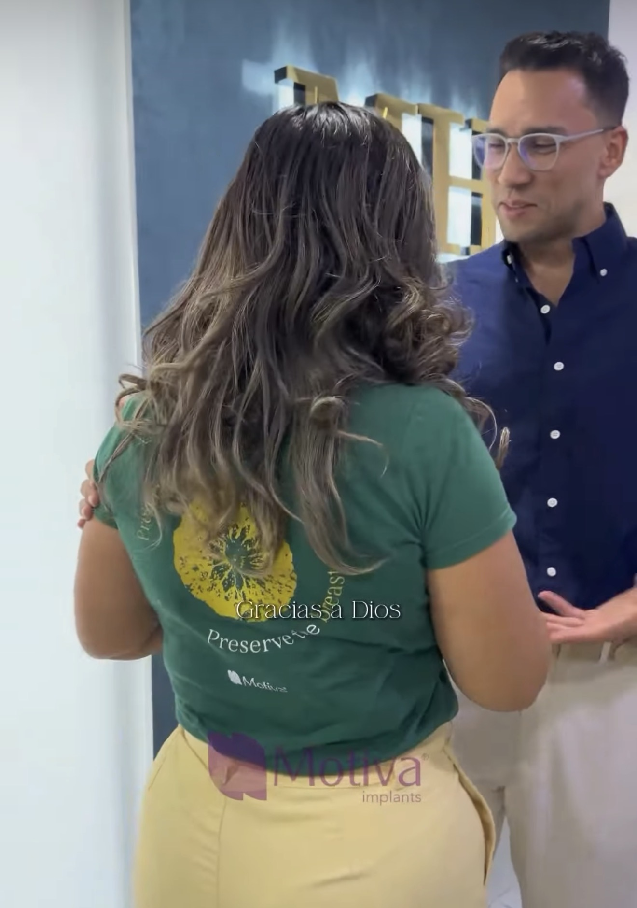
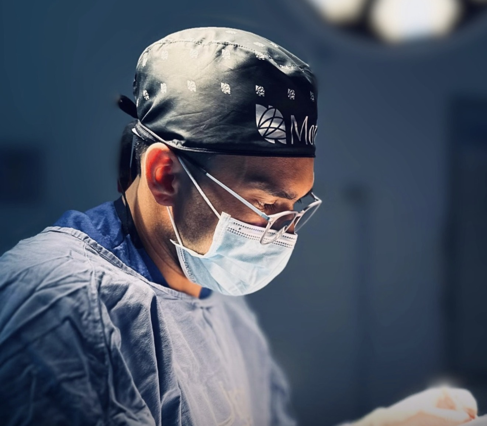
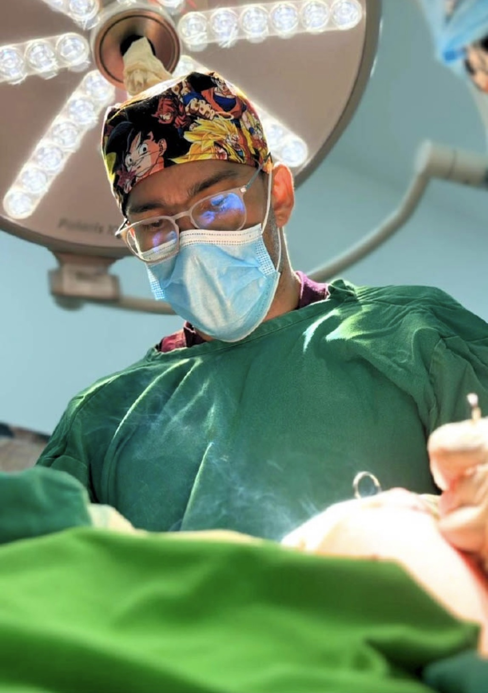
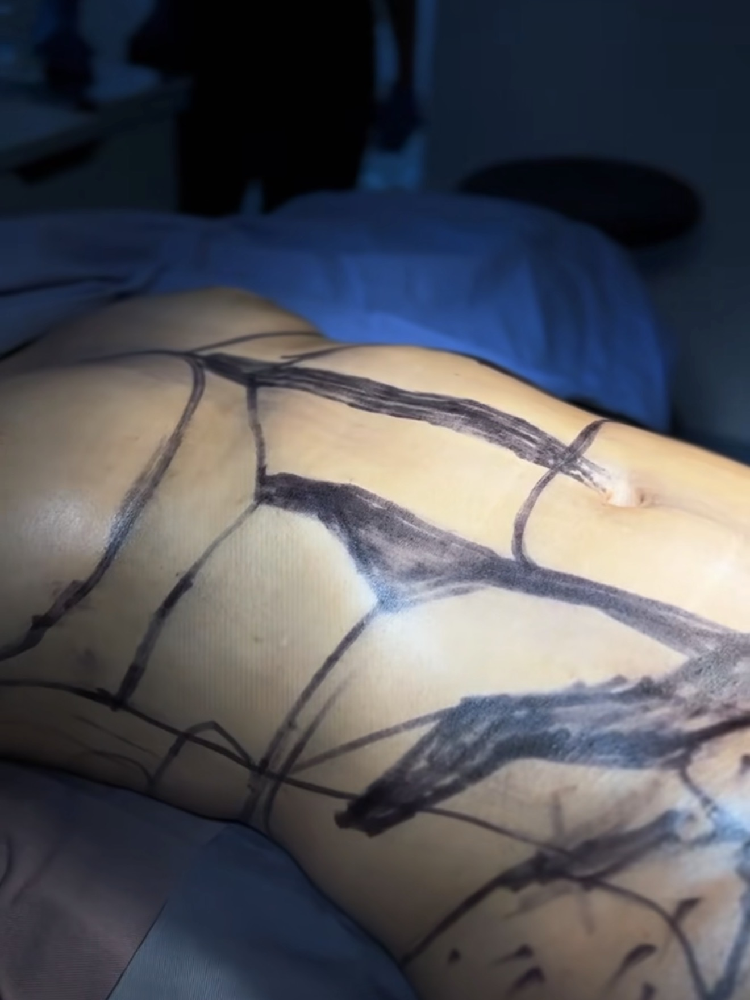
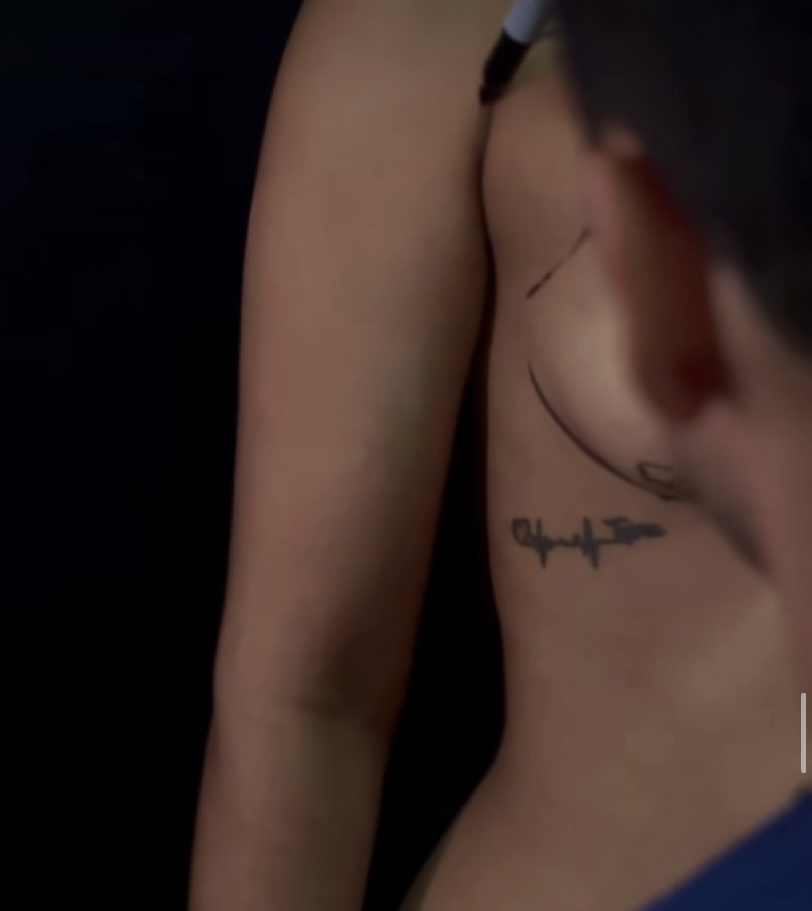

Resultados naturales
Plan quirúrgico alineado con tu anatomía, expectativas reales y armonía corporal.
Cirujano plástico · Ibagué
Más de 2.400 pacientes confían en el Dr. Cristhian Diaz, cirujano plástico con formación en la Universidad El Bosque. Atención particular, sin EPS.
Plan quirúrgico alineado con tu anatomía, expectativas reales y armonía corporal.
Valoración médica clara, procedimientos en entorno clínico y seguimiento cercano.
Un equipo atento desde la primera pregunta hasta los controles posteriores.
Valores de referencia por procedimiento y cotización personalizada en consulta.
Procedimientos
Cada valor es “desde” y debe confirmarse en valoración médica. La consulta virtual es gratis.
Atención real
Fotos reales del consultorio y quirófano ayudan a mostrar la seriedad del proceso: escucha, planeación, técnica y seguimiento.





Savings with support
Ibagué gives international patients a quieter recovery setting with direct surgeon access, bilingual coordination, and pricing that often makes multi-procedure plans more practical than U.S. clinic quotes.
Atención particular
Para pacientes de Ibagué, Tolima, Bogotá y la región, el primer paso es una conversación directa por WhatsApp para resolver dudas, revisar tiempos y orientar el procedimiento adecuado.
Aceptamos efectivo, tarjeta débito y crédito. Pregunta por alternativas de financiación y planes por procedimiento.
Preguntar por financiaciónOpiniones
La página pública de Doctoralia destaca opiniones verificadas y menciona la honestidad como una cualidad valorada por sus pacientes.
Pacientes destacan explicaciones honestas, expectativas realistas y tiempo suficiente para resolver dudas.
El seguimiento personal y la comunicación cercana ayudan a que el proceso se sienta más seguro.
Su perfil resalta experiencia en cirugía plástica facial y corporal en Ibagué.
Los testimonios finales deben publicarse con autorización del doctor y de cada paciente. Los resultados pueden variar.
Sobre el doctor
Cirujano plástico reconstructivo y estético formado en la Universidad El Bosque en Bogotá, médico de la Universidad del Tolima y miembro del equipo quirúrgico en clínicas de Ibagué.
Recovery retreat
A coordinator can help align the medical plan, travel window, recovery accommodation, nursing, transfers, garments, labs, and follow-ups so the experience feels guided from the first message.
How it works
Ubicación
Avenida Guabinal #57-15. Atención particular para pacientes locales, regionales e internacionales.
Contacto
Cuéntanos qué procedimiento estás considerando y el equipo te orientará por WhatsApp.
Consulta sin compromiso
Escríbenos por WhatsApp y resolvemos tus dudas hoy mismo.